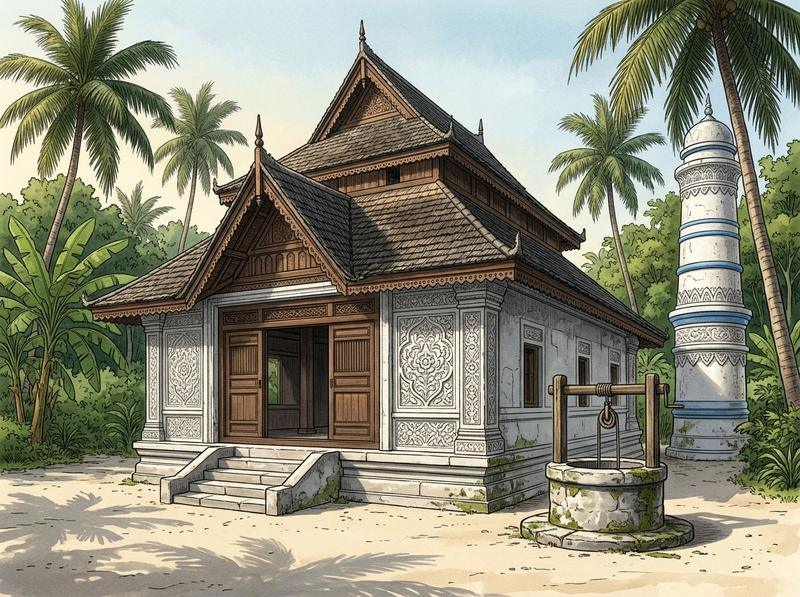

Architectural IllustrationSacred Coral Stone Architecture
Home to the Kelaa Old Friday Mosque (Aasaaree Hukuru Miskiy) built in 1701 AD during Sultan Mohamed of Dhevvadhoo's reign, the historic 80+ year-old Lily House, and remnants of the WWII British Royal Air Force armoury at Thun'di (Coral Stone Mosques).